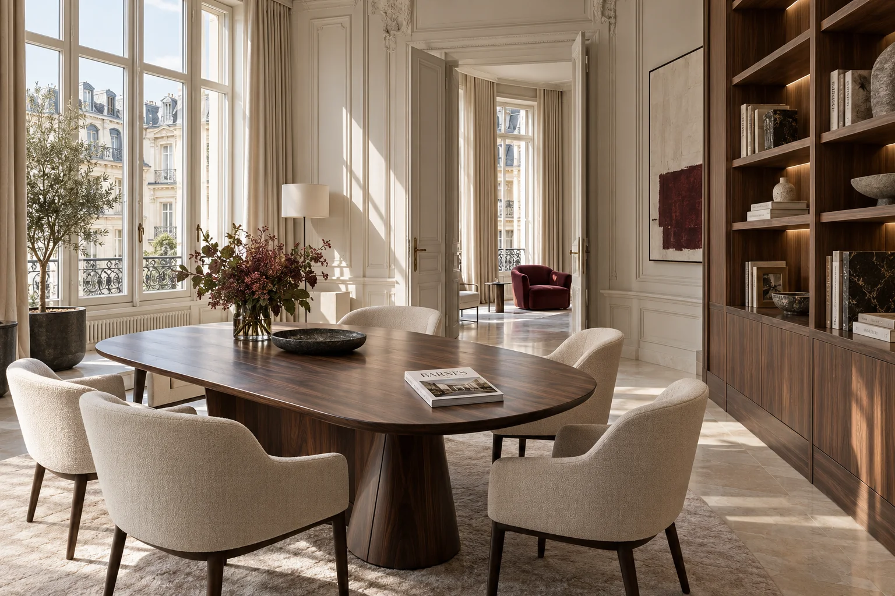

ДЛЯ СОБСТВЕННИКОВ
ПОЧЕМУ СОБСТВЕННИКИ ВЫБИРАЮТ BARNES

Представляем объект арендаторам с подходящим запросом
Используем клиентскую базу, профессиональные связи и сообщество BARNES, чтобы представить недвижимость людям с подходящим запросом.
Клиентская база · Партнёрская сеть · BARNES Club